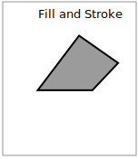
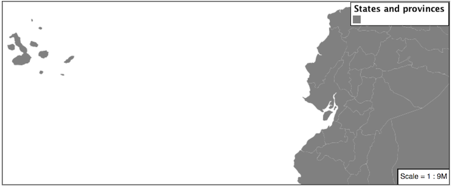
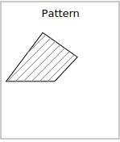
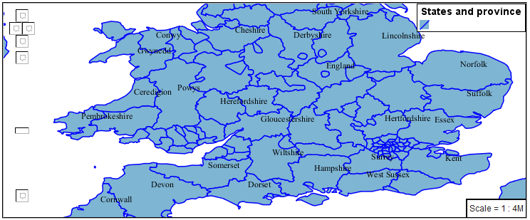
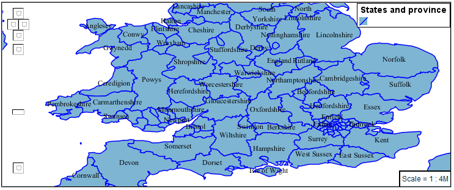
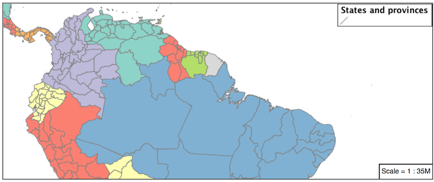
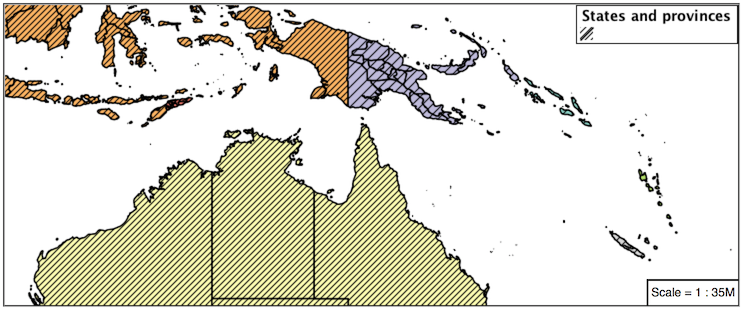

4.3. Polygons¶
Next we look at how YSLD styling can be used to represent polygons.

Polygon Geometry¶
Review of polygon symbology:
Polygons offer a direct representation of physical extent or the output of analysis.
The visual appearance of polygons reflects the current scale.
Polygons are recorded as a LinearRing describing the polygon boundary. Further LinearRings can be used to describe any holes in the polygon if present.
The Simple Feature for SQL Geometry model (used by GeoJSON) represents these areas as Polygons, the ISO 19107 geometry model (used by GML3) represents these areas as Surfaces.
SLD uses a PolygonSymbolizer to describe how the shape of a polygon is drawn. The primary characteristic documented is the Fill used to shade the polygon interior. The use of a Stroke to describe the polygon boundary is optional.
Labeling of a polygon is anchored to the centroid of the polygon. GeoServer provides a vendor-option to allow labels to line wrap to remain within the polygon boundaries.
For our Polygon exercises we will try and limit our YSLD documents to a single rule, in order to showcase the properties used for rendering.
Reference:
YSLD Reference Polygon symbolizer (User Manual | YSLD Reference)
Polygons (User Manual | SLD Reference )
This exercise makes use of the ne:states_provinces_shp layer.
Navigate to .
Create a new style polygon_example.
Name:
polygon_example
Workspace:
No workspace
Format:
YSLD
Choose polygon from the
Generate a default styledropdown and click generate.Replace the generated style with the following style and click Apply to save:
symbolizers: - polygon: fill-color: 'lightgrey'
Click on the tab Layer Preview to preview.

Set
ne:states_provinces_shpas the preview layer.
4.3.1. Stroke and Fill¶
The polygon symbolizer controls the display of polygon data.
The fill-color property is used to provide the color used to draw the interior of a polygon.
Replace the contents of
polygon_examplewith the following fill example:symbolizers: - polygon: fill-color: 'gray'
The Layer Preview tab can be used preview the change:
To draw the boundary of the polygon the stroke property is used:
The stroke property is used to provide the color and size of the polygon boundary. It is effected by the same parameters (and vendor specific parameters) as used for LineStrings.
symbolizers: - polygon: fill-color: 'gray' stroke-color: 'black' stroke-width: 2
Note
Technically the boundary of a polygon is a specific case of a LineString where the first and last vertex are the same, forming a closed LinearRing.
The effect of adding stroke is shown in the map preview:

An interesting technique when styling polygons in conjunction with background information is to control the fill opacity.
The fill-opacity property is used to adjust transparency (provided as range from 0.0 to 1.0). Use of fill-opacity to render polygons works well in conjunction with a raster base map. This approach allows details of the base map to shown through.
The stroke-opacity property is used in a similar fashion, as a range from 0.0 to 1.0.
symbolizers: - polygon: fill-color: 'white' fill-opacity: 0.5 stroke-color: 'lightgrey' stroke-width: 0.25 stroke-opacity: 0.5
As shown in the map preview:

This effect can be better appreciated using a layer group.
Where the transparent polygons is used lighten the landscape provided by the base map.

4.3.2. Pattern¶
The fill-graphic property can be used to provide a pattern.
The fill pattern is defined by repeating one of the built-in symbols, or making use of an external image.
We have two options for configuring a fill-graphic with a repeating graphic:
Using external to reference to an external graphic.
Use of mark to access a predefined shape. SLD provides several well-known shapes (circle, square, triangle, arrow, cross, star, and x). GeoServer provides additional shapes specifically for use as fill patterns.
Update polygon_example with the following built-in symbol as a repeating fill pattern:
symbolizers: - polygon: fill-graphic: symbols: - mark: shape: square fill-color: 'gray' stroke-color: 'black' stroke-width: 1
The map preview (and legend) will show the result:

Add a black stroke:
symbolizers: - polygon: stroke-color: 'black' stroke-width: 1 fill-graphic: symbols: - mark: shape: square fill-color: 'gray' stroke-color: 'black' stroke-width: 1
To outline the individual shapes:
Additional fill properties allow control over the orientation and size of the symbol.
The size property is used to adjust the size of the symbol prior to use.
The rotation property is used to adjust the orientation of the symbol.
Adjust the size and rotation as shown:
symbolizers: - polygon: stroke-color: 'black' stroke-width: 1 fill-graphic: size: 22 rotation: 45.0 symbols: - mark: shape: square fill-color: 'gray' stroke-color: 'black' stroke-width: 1
The size of each symbol is increased, and each symbol rotated by 45 degrees.
Note
Does the above look correct? There is an open request GEOT-4642 to rotate the entire pattern, rather than each individual symbol.
The size and rotation properties just affect the size and placement of the symbol, but do not alter the symbol’s design. In order to control the color we set the fill-color and stroke-color properties of the mark.
Replace the contents of
polygon_examplewith the following:symbolizers: - polygon: fill-graphic: symbols: - mark: shape: square fill-color: '#008000' stroke-color: '#006400' stroke-width: 1
This change adjusts the appearance of our grid of squares.
The well-known symbols are more suited for marking individual points. Now that we understand how a pattern can be controlled it is time to look at the patterns GeoServer provides.
shape://horizline
horizontal hatching
shape://vertline
vertical hatching
shape://backslash
right hatching pattern
shape://slash
left hatching pattern
shape://plus
vertical and horizontal hatching pattern
shape://times
cross hatch pattern
Update the example to use shape://slash for a pattern of left hatching.
symbolizers: - polygon: stroke-color: 'black' stroke-width: 1 fill-graphic: symbols: - mark: shape: 'shape://slash' stroke-color: 'gray'
This approach is well suited to printed output or low color devices.

To control the size of the symbol produced use the size property of the fill-graphic.
symbolizers: - polygon: stroke-color: 'black' stroke-width: 1 fill-graphic: size: 8 symbols: - mark: shape: 'shape://slash' stroke-color: 'gray'
This results in a tighter pattern shown:

Multiple fills can be applied by using a seperate symbolizer for each fill as part of the same rule.
symbolizers: - polygon: stroke-color: 'black' stroke-width: 1 fill-color: '#DDDDFF' - polygon: fill-graphic: size: 8 symbols: - mark: shape: shape://slash stroke-color: 'black' stroke-width: 0.5
The resulting image has a solid fill, with a pattern drawn overtop.

4.3.3. Label¶
Labeling polygons follows the same approach used for LineStrings.

The key properties fill and label are used to enable Polygon label generation.
By default labels are drawn starting at the centroid of each polygon.

Try out label and fill together by replacing our
polygon_examplewith the following:symbolizers: - polygon: stroke-color: 'blue' stroke-width: 1 fill-color: '#7EB5D3' - text: label: ${name} fill-color: 'black'
Each label is drawn from the lower-left corner as shown in the
Layer Previewpreview.
We can adjust how the label is drawn at the polygon centroid.
The property anchor provides two numbers expressing how a label is aligned with respect to the centroid. The first value controls the horizontal alignment, while the second value controls the vertical alignment. Alignment is expressed between 0.0 and 1.0 as shown in the following table.
Left
Center
Right
Top
0.0 1.0
0.5 1.0
1.0 1.0
Middle
0.0 0.5
0.5 0.5
1.0 0.5
Bottom
0.0 0.0
0.5 0.0
1.0 0.0
Adjusting the anchor is the recommended approach to positioning your labels.
Using the anchor property we can center our labels with respect to geometry centroid.
To align the center of our label we select 50% horizontally and 50% vertically, by filling in 0.5 and 0.5 below:
symbolizers: - polygon: stroke-color: 'blue' stroke-width: 1 fill-color: '#7EB5D3' - text: label: ${name} fill-color: 'black' anchor: [0.5, 0.5]
The labeling position remains at the polygon centroid. We adjust alignment by controlling which part of the label we are “snapping” into position.

The property displacement can be used to provide an initial displacement using and x and y offset.
This offset is used to adjust the label position relative to the geometry centroid resulting in the starting label position.
symbolizers: - polygon: stroke-color: 'blue' stroke-width: 1 fill-color: '#7EB5D3' - text: label: ${name} fill-color: 'black' displacement: [0, 7]
Confirm this result in the map preview.
These two settings can be used together.

The rendering engine starts by determining the label position generated from the geometry centroid and the label-offset displacement. The bounding box of the label is used with the label-anchor setting align the label to this location.
Step 1: starting label position = centroid + displacement
Step 2: snap the label anchor to the starting label position
To move our labels down (allowing readers to focus on each shape) we can use displacement combined with followed by horizontal alignment.
symbolizers: - polygon: stroke-color: 'blue' stroke-width: 1 fill-color: '#7EB5D3' - text: label: ${name} fill-color: 'black' anchor: [0.5, 1] displacement: [0, -7]
As shown in the map preview.
4.3.4. Legibility¶
When working with labels a map can become busy very quickly, and difficult to read.
GeoServer provides extensive vendor parameters directly controlling the labelling process.
Many of these parameters focus on controlling conflict resolution (when labels would otherwise overlap).
Two common properties for controlling labeling are:
x-maxDisplacement indicates the maximum distance GeoServer should displace a label during conflict resolution.
x-autoWrap allows any labels extending past the provided width will be wrapped into multiple lines.
Using these together we can make a small improvement in our example:
symbolizers: - polygon: stroke-color: 'blue' stroke-width: 1 fill-color: '#7EB5D3' - text: label: ${name} fill-color: 'black' anchor: [0.5, 0.5] x-maxDisplacement: 40 x-autoWrap: 70
As shown in the following preview.
Even with this improved spacing between labels, it is difficult to read the result against the complicated line work.
Use of a halo to outline labels allows the text to stand out from an otherwise busy background. In this case we will make use of the fill color, to provide some space around our labels. We will also change the font to Arial.
symbolizers: - polygon: stroke-color: 'blue' stroke-width: 1 fill-color: '#7EB5D3' - text: label: ${name} fill-color: 'black' anchor: [0.5, 0.5] font-family: Arial font-size: 14 font-style: normal font-weight: normal halo: fill-color: '#7EB5D3' fill-opacity: 0.8 radius: 2 x-maxDisplacement: 40 x-autoWrap: 70
By making use of fill-opacity on the halo we we still allow stroke information to show through, but prevent the stroke information from making the text hard to read.
And advanced technique for manually taking control of conflict resolution is the use of the priority.
This property takes an expression which is used in the event of a conflict. The label with the highest priority “wins.”
The Natural Earth dataset we are using includes a labelrank intended to control what labels are displayed based on zoom level.
The values for labelrank go from 0 (for zoomed out) to 20 (for zoomed in). To use this value for priority we need to swap the values around so a scalerank of 1 is given the highest priority.
symbolizers: - polygon: stroke-color: 'blue' stroke-width: 1 fill-color: '#7EB5D3' - text: label: ${name} fill-color: 'black' anchor: [0.5, 0.5] font-family: Arial font-size: 14 font-style: normal font-weight: normal halo: fill-color: '#7EB5D3' fill-opacity: 0.8 radius: 2 x-maxDisplacement: 40 x-autoWrap: 70 priority: ${'20' - labelrank}
In the following map
East Flanderswill take priority overZeelandwhen the two labels overlap.
4.3.5. Theme¶
A thematic map (rather than focusing on representing the shape of the world) uses elements of style to illustrate differences in the data under study. This section is a little more advanced and we will take the time to look at the generated SLD file.
We can use a site like ColorBrewer to explore the use of color theming for polygon symbology. In this approach the the fill color of the polygon is determined by the value of the attribute under study.
This presentation of a dataset is known as “theming” by an attribute.
For our
ne:states_provinces_shpdataset, a mapcolor9 attribute has been provided for this purpose. Theming by mapcolor9 results in a map where neighbouring countries are visually distinct.Qualitative 9-class Set3
#8dd3c7
#fb8072
#b3de69
#ffffb3
#80b1d3
#fccde5
#bebada
#fdb462
#d9d9d9
If you are unfamiliar with theming you may wish to visit http://colorbrewer2.org to learn more. The i icons provide an adequate background on theming approaches for qualitative, sequential and diverging datasets.
The first approach we will take is to directly select content based on colormap, providing a color based on the 9-class Set3 palette above:
define: &stroke stroke-color: 'gray' stroke-width: 0.5 rules: - filter: ${mapcolor9 = '1'} scale: [min, max] symbolizers: - polygon: <<: *stroke fill-color: '#8DD3C7' - filter: ${mapcolor9 = '2'} scale: [min, max] symbolizers: - polygon: <<: *stroke fill-color: '#FFFFB3' - filter: ${mapcolor9 = '3'} scale: [min, max] symbolizers: - polygon: <<: *stroke fill-color: '#BEBADA' - filter: ${mapcolor9 = '4'} scale: [min, max] symbolizers: - polygon: <<: *stroke fill-color: '#FB8072' - filter: ${mapcolor9 = '5'} scale: [min, max] symbolizers: - polygon: <<: *stroke fill-color: '#80B1D3' - filter: ${mapcolor9 = '6'} scale: [min, max] symbolizers: - polygon: <<: *stroke fill-color: '#FDB462' - filter: ${mapcolor9 = '7'} scale: [min, max] symbolizers: - polygon: <<: *stroke fill-color: '#B3DE69' - filter: ${mapcolor9 = '8'} scale: [min, max] symbolizers: - polygon: <<: *stroke fill-color: '#FCCDE5' - filter: ${mapcolor9 = '9'} scale: [min, max] symbolizers: - polygon: <<: *stroke fill-color: '#D9D9D9' - filter: ${mapcolor9 <> '1' AND mapcolor9 <> '2' AND mapcolor9 <> '3' AND mapcolor9 <> '4' AND mapcolor9 <> '5' AND mapcolor9 <> '6' AND mapcolor9 <> '7' AND mapcolor9 <> '8' AND mapcolor9 <> '9'} scale: [min, max] symbolizers: - line: <<: *stroke
The Layer Preview tab can be used to preview this result.

This YSLD makes use of a define to avoid repeating the stroke-color and stroke-width information multiple times.
As an example the ${mapcolor9 = '2'} rule, combined with the define: results in the following collection of properties:
- filter: ${mapcolor9 = '2'} scale: [min, max] symbolizers: - polygon: stroke-color: 'gray' stroke-width: 0.5 fill-color: '#FFFFB3'
Reviewing the generated SLD shows us this representation:
<sld:Rule> <ogc:Filter> <ogc:PropertyIsEqualTo> <ogc:PropertyName>mapcolor9</ogc:PropertyName> <ogc:Literal>2</ogc:Literal> </ogc:PropertyIsEqualTo> </ogc:Filter> <sld:PolygonSymbolizer> <sld:Fill> <sld:CssParameter name="fill">#ffffb3</sld:CssParameter> </sld:Fill> </sld:PolygonSymbolizer> <sld:LineSymbolizer> <sld:Stroke> <sld:CssParameter name="stroke">#808080</sld:CssParameter> <sld:CssParameter name="stroke-width">0.5</sld:CssParameter> </sld:Stroke> </sld:LineSymbolizer> </sld:Rule>
There are three important functions, defined by the Symbology Encoding specification, that are often easier to use for theming than using rules.
Recode: Used the theme qualitative data. Attribute values are directly mapped to styling property such as fill or stroke-width.
Categorize: Used the theme quantitative data. Categories are defined using min and max ranges, and values are sorted into the appropriate category.
Interpolate: Used to smoothly theme quantitative data by calculating a styling property based on an attribute value.
Theming is an activity, producing a visual result allow map readers to learn more about how an attribute is distributed spatially. We are free to produce this visual in the most efficient way possible.
Swap out mapcolor9 theme to use the Recode function:
symbolizers: - polygon: stroke-color: 'gray' stroke-width: 0.5 fill-color: ${Recode(mapcolor9, '1','#8dd3c7', '2','#ffffb3', '3','#bebada', '4','#fb8072', '5','#80b1d3', '6','#fdb462', '7','#b3de69', '8','#fccde5', '9','#d9d9d9')}
The Layer Preview tab provides the same preview.
The Generated SLD tab shows where things get interesting. Our generated style now consists of a single Rule:
<sld:Rule> <sld:PolygonSymbolizer> <sld:Fill> <sld:CssParameter name="fill"> <ogc:Function name="Recode"> <ogc:PropertyName>mapcolor9</ogc:PropertyName> <ogc:Literal>1</ogc:Literal> <ogc:Literal>#8dd3c7</ogc:Literal> <ogc:Literal>2</ogc:Literal> <ogc:Literal>#ffffb3</ogc:Literal> <ogc:Literal>3</ogc:Literal> <ogc:Literal>#bebada</ogc:Literal> <ogc:Literal>4</ogc:Literal> <ogc:Literal>#fb8072</ogc:Literal> <ogc:Literal>5</ogc:Literal> <ogc:Literal>#80b1d3</ogc:Literal> <ogc:Literal>6</ogc:Literal> <ogc:Literal>#fdb462</ogc:Literal> <ogc:Literal>7</ogc:Literal> <ogc:Literal>#b3de69</ogc:Literal> <ogc:Literal>8</ogc:Literal> <ogc:Literal>#fccde5</ogc:Literal> <ogc:Literal>9</ogc:Literal> <ogc:Literal>#d9d9d9</ogc:Literal> </ogc:Function> </sld:CssParameter> </sld:Fill> </sld:PolygonSymbolizer> <sld:LineSymbolizer> <sld:Stroke> <sld:CssParameter name="stroke">#808080</sld:CssParameter> <sld:CssParameter name="stroke-width">0.5</sld:CssParameter> </sld:Stroke> </sld:LineSymbolizer> </sld:Rule>
4.3.6. Bonus¶
The following optional explore and challenge activities offer a chance to review and apply the ideas introduced here. The challenge activities equire a bit of creativity and research to complete.
In a classroom setting you are encouraged to team up into groups, with each group taking on a different challenge.
4.3.6.1. Explore Antialiasing¶
When we rendered our initial preview, without a stroke, thin white gaps (or slivers) are visible between our polygons.
This effect is made more pronounced by the rendering engine making use of the Java 2D sub-pixel accuracy. This technique is primarily used to prevent an aliased (stair-stepped) appearance on diagonal lines.
Clients can turn this feature off using a GetMap format option:
format_options=antialiasing=off;
The LayerPreview provides access to this setting from the Open Layers Options Toolbar:
Explore: Experiment with fill and stroke settings to eliminate slivers between polygons.
Note
Answer provided at the end of the workbook.
4.3.6.2. Explore Categorize¶
The Categorize function can be used to generate property values based on quantitative information. Here is an example using Categorize to color states according to size.
symbolizers: - polygon: fill-color: ${Categorize(Shape_Area, '#08519c','0.5', '#3182bd','1', '#6baed6','5', '#9ecae1','60', '#c6dbef','80', '#eff3ff')}
An exciting use of the GeoServer shape symbols is the theming by changing the size used for pattern density.
Explore: Use the Categorize function to theme by datarank.

Note
Answer provided at the end of the workbook.
4.3.6.3. Challenge Goodness of Fit¶
A subject we touched on during labeling was the conflict resolution GeoServer performs to ensure labels do not overlap.
In addition to the vendor parameter for max displacement you can experiment with different values for “goodness of fit”. These settings control how far GeoServer is willing to move a label to avoid conflict, and under what terms it simply gives up:
x-goodnessOfFit: 0.3 x-maxDisplacement: 130
You can also experiment with turning off this facility completely:
x-conflictResolution: false
Challenge: Construct your own example using maxDisplacement and goodnessOfFit.
4.3.6.4. Challenge Halo¶
The halo example used the fill color and opacity for a muted halo, while this improved readability it did not bring attention to our labels.
A common design choice for emphasis is to outline the text in a contrasting color.
Challenge: Produce a map that uses a white halo around black text.
Note
Answer provided at the end of the workbook.
4.3.6.5. Challenge Theming using Multiple Attributes¶
A powerful tool is theming using multiple attributes. This is an important concept allowing map readers to perform “integration by eyeball” (detecting correlations between attribute values information).
Challenge: Combine the mapcolor9 and datarank examples to reproduce the following map.
Note
Answer provided at the end of the workbook.
4.3.6.6. Challenge Use of Z-Index¶
Earlier we looked at using multiple feature-styles to simulate line string casing. The line work was drawn twice, once with thick line, and then a second time with a thinner line. The resulting effect is similar to text halos - providing breathing space around complex line work allowing it to stand out.
Challenge: Use what you know of LineString feature-styles to reproduce the following map:

Note
Answer provided at the end of the workbook.